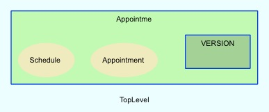
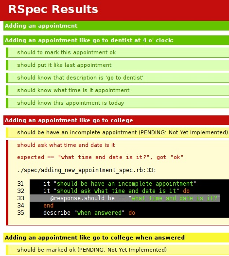
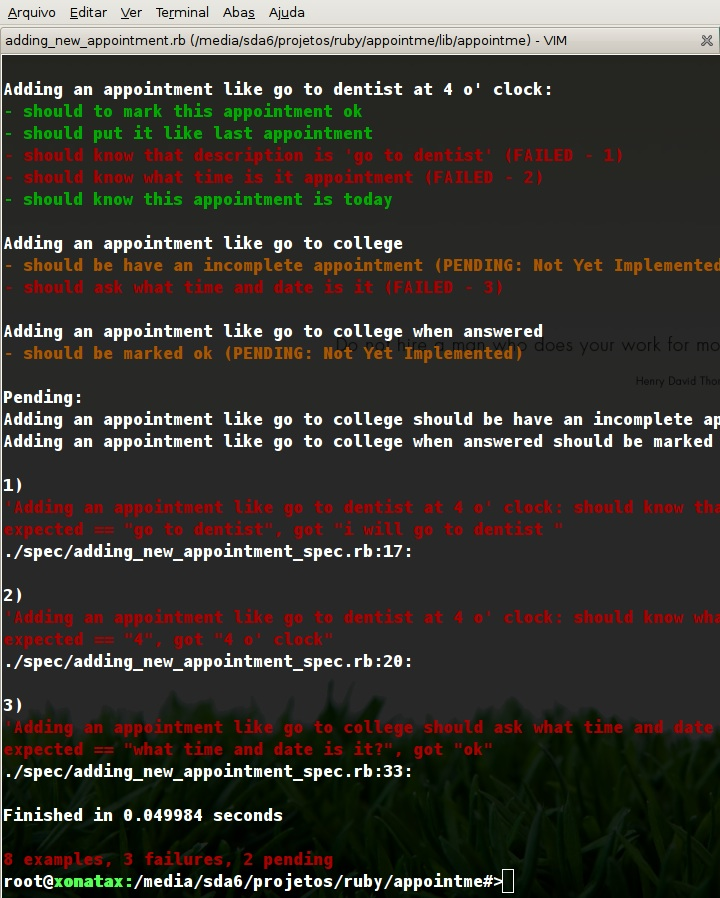

‘agendador’
Get Version
0.0.4Ferramentas usadas para contrução:
Este projeto foi feito usando NewGem para empacotamento em formato de gem e RSpec para testes e bdd.O que é gem?
Gem é um pacote de códigos ruby para rodar e instalar com facilidade, para usar as gems disponíveis é necessário instalar Rubygems que fornece um executável baseado na linha de comando com opções de gerenciar as gems, instalar, remover, ver documentações. Para usar as gems existentes é necessário digitar o comando gem install nome_da_gem, neste exemplo está instalando a gem agendador que seria a própria gem deste projeto.sudo gem install agendadorExiste outra opção que é instalar localmente usando o próprio arquivo gem:
jonatas@xonatax-mac:~/projetos/ruby/appointme$ sudo gem install pkg/appointme-0.0.4.gem Password: ****** Successfully installed appointme-0.0.4 1 gem installed Installing ri documentation for appointme-0.0.4... Installing RDoc documentation for appointme-0.0.4..
Documentação do projeto
Ruby RI – Ferramenta de vizualização de documentação:
Observe que foi instalado a documentação ri e RDoc e apartir de agora estão disponíveis para consulta. Esta consulta pode ser feita através de um utilitário do ruby chamado ri:
jonatas@xonatax-mac:~/projetos/ruby/appointme$ ri Appointme::Appointment
------------------------------------------ Class: Appointme::Appointment
represents an appointment with some time and description puts
Appointme::Appointment.new :when => "next sunday at 7:30",
:description => "go to church" when?: Sunday(02) at 07:30 - go to
church puts Appointme::Appointment.new :when =>
Time.mktime(2008,10,10,19,30), :description => "go to church"
when?: Friday(10) at 19:30 - go to church
------------------------------------------------------------------------
Class methods:
--------------
new
Instance methods:
-----------------
dont_know_when?, incomplete?, pretty_when, to_s, when
Attributes:
description, when
...skipping...
------------------------------------------
Class: Appointme::Appointment
represents an appointment with some time and description puts
Appointme::Appointment.new :when => "next sunday at 7:30",
:description => "go to church"
# => when?: Sunday(02) at 07:30 - go to
Appointme::Appointment.new :when => Time.mktime(2008,10,10,19,30),
:description => "go to church"
# => when?: Friday(10) at 19:30 - go to church
------------------------------------------------------------------------
Class methods:
--------------
new
Instance methods:
-----------------
dont_know_when?, incomplete?, pretty_when, to_s, when
Attributes:
description, when
Observação:
Esta é uma ferramenta desenvolvida para acesso rápido via terminal unix ou ms-dos, existem outras ferramentas GUI para acessar a mesma documentação.
Para ver a documentação do projeto em html:
Digite o comando: gem server
Usando este comando, gem irá disponibilizar um servidor em localhost para vizualização do conteúdo de todas as gems e esta é outra ferramenta muito utilizada no desenvolvimento ruby.
Visão de alto-nível:
O sistema de documentação também gera uma relação geral das classes e relacionamentos de alto-nível.

O que é RSpec?
RSpec é um framework de desenvolvimento orientado a comportamento que básicamente consiste da evolução do desenvolvimento orientado a testes sendo mais conciso e aproxima-se mais de um ambiente de desenvolvimento mais evidente.
Basicamente funciona como uma regra que tem uma característica e espera um comportamento.
descreva "adicionando um compromisso como tomar umas cervejas depois do trabalho" { antes(:tudo) { @resposta = Agendador.entenda "amanhã as 6:10pm sair e tomar umas cervejas" @ultimo_compromisso = Agendador.ultimo_compromisso } isso "deve marcar o compromisso com sucesso" { @resposta.nao_deve ser_null @ultimo_compromisso.nao_deve ser_null } isso "deve saber que a descrição do compromisso é 'sair e tomar umas cervejas'" { @ultimo_compromisso.descricao.deve ser == "sair e tomar umas cervejas" } isso "deve saber que o compromisso é as 18:10" { @ultimo_compromisso.to_s.match /18:10/ } } }
Visualizando specs no formato html

Visualizando no console:

Visualizando os specs do sistema:
rake spec_html
Este comando gera o arquivo specs.html na pasta docs, apenas imprimindo todas as descrições de comportamento.
o spec sem rake também pode ser usado:
spec spec/*_spec.rb --format html > specs.html
Ferramenta rake:
Rake é o ruby make, uma ferramenta simples com um propósito similar ao ant ou make, executar tarefas e permitir criar tarefas de uma forma fácil. Por exemplo, este documento é gerado usando o comando rake estágio que seria para gerar o projeto de estágio(do inglês stage ).
descrição 'Gerar arquivos do estágio' tarefa :estagio { Dir['estagio/*.txt'].cada { |txt| # cada arquivo txt sh %{ #{RUBY_APP} script/txt2html #{txt} > #{txt.gsub(/txt$/,'html')} } } }
Os arquivos rake devem ter a extensão .rake e no padrão gem está dentro da pasta tasks.
Para ver as tarefas existentes use rake --tasks
New Gem
Newgem é uma gem que ajuda a criar outras gems gerando a estrutura default e as documentações e uma linda template css como esta que estamos usando.
Ele configura tarefas rake, gera executáveis, empacota as gems e traz todas as tarefas triviais para a publicação de uma gem e taferas que um projeto precisa executar.
Se não fosse por esta ferramenta, este trabalho não iria ficar naturalmente com estas cores padrão, e não ia ser tão simples assim digitar tudo este html. Por default o newgem traz uma template iniciada com a documentação e as partes do projeto que precisa escrever os conteúdos bastando apenas alterar os txts referentes as documentações e gerar lindos htmls baseados em txt2html que é um script que usa RedCloth, que é uma ferramenta de converter marcações mais simples em código html.
Observe que na tarefa rake criada acima este comando é executado convertendo todos os txt em html.
Estrutura default do projeto
Quando iniciado um novo projeto com newgem os seguintes diretórios estão disponíveis:
jonatas@xonatax-mac:~/projetos/ruby/appointme$ ls -lah total 112 drwxr-xr-x 18 jonatas staff 612B Nov 2 11:50 . drwxr-xr-x 18 jonatas staff 612B Oct 31 17:32 .. -rwxr-xr-x@ 1 jonatas staff 1.4K Oct 27 00:13 History.txt -rwxr-xr-x 1 jonatas staff 1.0K Jul 21 19:33 License.txt -rwxr-xr-x 1 jonatas staff 591B Oct 26 23:16 Manifest.txt -rwxr-xr-x 1 jonatas staff 3.9K Oct 26 17:48 README.txt -rwxr-xr-x 1 jonatas staff 139B Jul 21 19:33 Rakefile drwxr-xr-x 4 jonatas staff 136B Jul 28 22:19 config drwxr-xr-x 11 jonatas staff 374B Oct 27 22:10 doc drwxr-xr-x 4 jonatas staff 136B Oct 26 22:54 lib drwxr-xr-x 4 jonatas staff 136B Nov 2 11:50 pkg drwxr-xr-x 6 jonatas staff 204B Jul 21 19:33 script -rwxr-xr-x 1 jonatas staff 35K Jul 21 19:33 setup.rb drwxr-xr-x 6 jonatas staff 204B Oct 27 21:45 spec drwxr-xr-x 8 jonatas staff 272B Nov 2 11:49 stage_pt_br drwxr-xr-x 6 jonatas staff 204B Oct 28 08:58 tasks drwxr-xr-x 4 jonatas staff 136B Jul 21 19:33 test drwxr-xr-x 9 jonatas staff 306B Oct 27 00:01 website
- No arquivo History.txt está gravado o histórico de atividades relacionadas a evolução do projeto. É neste arquivo que ficam relacionadas as modificações com usas respectivas datas, e também server como documentação e referência para o grupo que está desenvolvendo.
- No arquivo License.txt fica escrito a liçensa de uso do código fonte, em nosso caso é MIT e pode ser alterado ou não. Abaixo segue a tradução da licença.
É dada permissão, livre de cargos, a qualquer pessoa de adquirir uma cópia deste software e documentação associada (o "Software") e negociá-lo sem restrições, incluindo os direitos de usar, copiar, modificar, fundir, publicar, distribuir, sub-licenciar e/ou vender cópias do Software, sem restrições, permitindo ainda àqueles que recebem o Software ter os mesmos direitos, sob as seguintes condições:
A declaração de direitos autorais dada acima deverá ser incluída em todas as cópias ou partes substanciais do Software.
O Software é fornecido “no estado”, sem garantias de qualquer tipo, sejam expressas ou implicadas, incluindo mas não limitado às garantias de mercabilidade, adequação para um propósito específico e não transgressão. Em caso algum serão os autores ou detentores dos direitos autorais responsabilizados em alguma reclamação, danos ou em outras obrigações, seja através de processos de contrato, por danos ou de outro tipo, devidos a ou ligados ao Software ou ao uso ou outras transacções do Software
- O arquivo Manifest.txt é aonde ficam todos os arquivos que participam do empacotamento da gem e estão registrados todos os arquivos que pertemcem ao projeto. Quando for adicionado um novo arquivo ao projeto esse arquivo tem que ser atualizado. Para fazer isso de uma maneira mais fácil deve ser usado a tarefa
rake manifest:refreshque irá sobrescrever o arquivo com os arquivos existentes.
- O arquivo README.txt contém as informações básicas do projeto, uma descrição curta sobre o que é o projeto e por onde começar. Por default é este que irá aparecer quando a documentação RDoc for aberta.
- Pasta config é aonde ficam as configurações do sistema, dentro deste diretório existem dois arquivos, o hoe.rb e o requirements.rb:
- hoe ficam todas as referências de configuração da construção do projeto e dados sobre o projeto, dono, local aonde está hospedado etc.
- requirements.rb ficam todas as gems de dependência do projeto e é criado uma mensagem de erro quando uma das gems não está instalada.
- Pasta doc é a pasta das documentações do rdoc no formato html.
- Pasta lib é aonde estão os códigos fontes da gem.
jonatas@xonatax-mac:~/projetos/ruby/appointme$ ls -R lib appointme appointme.rb lib/appointme: appointment.rb schedule.rb version.rb
- Pasta pkg é o diretório para colocar a gem quando empacotado o código fonte.
jonatas@xonatax-mac:~/projetos/ruby/appointme$ ls pkg appointme-0.0.4.gem chronic-0.2.3.gem
- Pasta script é para guardar os scripts de linha de comando, por default existem os seguintes scripts:
jonatas@xonatax-mac:~/projetos/ruby/appointme$ ls script console destroy generate txt2html
- console é muito útil para testes interativos com as classes. O que o script faz é carregar as suas classes compiladas e fazer testes rapidamente, exemplo:
jonatas@xonatax-mac:~/projetos/ruby/appointme$ script/console Carregando gem agendador >> Appointme.en # usei o tab duas vezes para ver as opções (auto-completar) Appointme.entender >> Appointme.entender "jogar futebol próximo sábado às 4 da tarde" => <Agendador::Compromisso:0x625980 @descricao="jogar futebol próximo sábado", @quando=Sat Nov 08 16:00:00> >>
- generate usado para gerar uma estrutura apartir de uma template default. Neste projeto foi usado:
jonatas@xonatax-mac:~/projetos/ruby/appointme$ script/generate install_rspec exists spec exists tasks overwrite spec/appointme_spec.rb? [Ynaiqd] n skip spec/appointme_spec.rb overwrite spec/spec.opts? [Ynaiqd] n skip spec/spec.opts overwrite spec/spec_helper.rb? [Ynaiqd] n skip spec/spec_helper.rb create tasks/rspec.rake
neste caso já havia sido instalado uma vez então houve algumas perguntas para sobrescrição dos arquivos existentes.
- destroy é usado para desfazer o que o script/generate faz.
- txt2html é o script que converte um arquivo texto para um arquivo html com marcação do textile, isso é um facilitador muibo bom para continuar escrevendo txt e gerando bons documentos html. Para converter um txt em html é simples:
script/txt2html arquivo.txt > arquivo.html
- O código ruby setup.rb é usado para as mais diversas tarefas dentro do projeto, fornecendo funções utilitárias para publicação, configuração default.
- A pasta spec é aonde ficam as expectations ou seja, os testes do rspec e outros.
jonatas@xonatax-mac:~/projetos/ruby/appointme$ ls spec appointme_spec.rb schedule_spec.rb spec.opts spec_helper.rb
- arquivos terminados em _spec.rb estão as histórias dos usuários e o que se espera delas.
- spec.opts estão as opções para rodar o rspec:
--color --format specdocs - spec_helper.rb é o arquivo utilitário que por default é incluido quando for usar o rspec.
- A pasta stage_pt_br é aonde está este arquivo do estágio. Como o projeto inteiro foi escrito em inglês e apenas esta pasta está contendo todo o material e documentação em português:
jonatas@xonatax-mac:~/projetos/ruby/appointme$ ls stage_pt_br/ index_pt_br.html javascripts template.html.erb index_pt_br.txt stylesheets
Esta é a única pasta do projeto que não foi criada automaticamente pelo gerador e foi adicionada depois para guardar este projeto de estágio.
- A pasta test traz o default do ruby para testes unitários e possui dois arquivos um para teste e outro para helper, mas neste caso não está sendo utilizado pois foi escolhido a ferramenta rspec para fazer testes.
- A pasta website
Nesta pasta fica o website do projeto, trazendo também como na pasta stage_pt_br os estilos e template e javascript iniciais para o projeto.
A história com Chronic gem
No início deste projeto, eu estava guiando ele usando Osiris que é um chatterbot implementado usando a linguagem de programação ruby. A abordagem usando o chatterbot para implementar um sistema de compreensão de datas e horas não foi muito longe pois a tentativa de organizar as horas naquele contexto que o Osiris oferecia, não tornavam as coisas muito simples então decisão foi encontrar uma ferramenta que transformasse uma"string"em uma instância de uma classe
Time.newe encontrei facilmente no google Chronic gem onde simplesmente precisava escrever:
puts Chronic.parse("próximo sábado às 8").inspect Sat Nov 01 08:00:00 -0200 2008com várias opções como esta eu apenas reparti o resto da frase com a hora e coloquei o compromisso em uma agenda:
include Agendador agenda = Agenda.new ir_na_aula_de_ingles = Agendador.new :quando => "próximo sábado as 3 da tarde", :descrição => "aula de ingles" agenda.compromissos << ir_na_aula_de_ingles puts agenda.compromissos # quando?: Sábado(01) às 15:00 - aula de ingles
Usando os métodos estáticos do agendador para ser mais fácil
Agendador.entenda "amanhã as 8 levantar cara!"
Agendador.entenda "amanhã as 9 trabalho, trabalho"
Agendador.entenda "comer alguma comida japonesa na hora do almoço com a maria."
Agendador.entenda "amanhã as 6:10pm sair e tomar umas cervejas"
Agendador.entenda "amanhã as 6:30pm happy hour!!! uhuuuu"
imprime Agendador.entenda "mostre amanhã as 6 da tarde"
quando?: Segunda(27) as 18:10 - sair e tomar umas cervejas
quando?: Segunda(27) as 18:30 - happy hour! uhuuuu
Licença
Esse código é livre para usar sobre os termos da licença MIT.
Contato
Comentários são bem-vindos. Envie um email para Jônatas Davi Paganini
Jônatas Davi Paganini, 17th November 2008
Theme extended from Paul Battley